Gastronomía
Descubra la Gastronomía Colombiana, los platos típicos de Colombia, la cocina colombiana es un buen ejemplo de multiculturalidad. Mezcla influencias indígenas, españolas y africanas. En este artículo esperamos hacerle la boca agua, entre frutas exóticas, pescado a la parrilla y un excelente café. Descubra la Gastronomía Colombiana, los platos típicos de Colombia, la cocina colombiana es un buen ejemplo de multiculturalidad. Mezcla influencias indígenas, españolas y africanas. En este artículo esperamos hacerle la boca agua, entre frutas exóticas, pescado a la parrilla y un excelente café.
Bebidas
Aguapanela
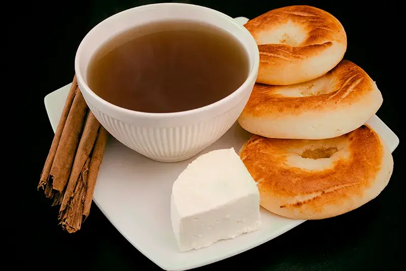
El agua de panela, limonada de panela, agua panela o aguapanela, como se le conoce comúnmente a esta, una de las bebidas tradicionales de Colombia.
ver másMasato
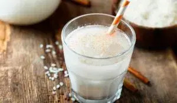
Es una de las bebidas artesanales más populares en los departamentos de Cundinamarca, Santander y Tolima. Al igual que la chicha, es fermentada y elaborada a base de cereales como el arroz, el maíz y el trigo, o tubérculos como la yuca.
Ver másChicha
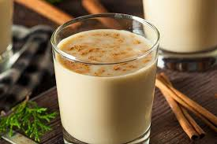
La bebida sagrada del pueblo Muisca. La chicha, es maíz fermentado con panela, a veces piña dejado a reposar varios días hasta obtener una bebida turbia y espesa, ligeramente ácida, con aromas de fermentos y cereales.
Ver másAguardiente
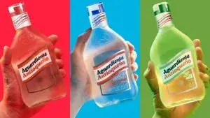
Es coloquialmente conocido como ‘guaro’ y representa una de las bebidas colombianas por excelencia. El aguardiente es una bebida destilada a base de caña de azúcar y anís, considerada por los colombianos como el licor nacional.
Ver másComidas Tipicas
Bandeja Paisa

Es un plato característico de la zona de Antioquía, pero que se puede disfrutar en cualquier parte del país. Está elaborada con 10 ingredientes esenciales: arroz, chorizo, huevo, carne molida, aguacate, chicharrón de cerdo, frijoles, arepas, morcilla y plátano maduro.
Ver másArepas

En la gastronomía colombiana hay muchos tipos de arepas elaboradas principalmente con harina de maíz o de trigo, algunas de ellas son: paisa, boyacense, de choclo, de huevo (Arepa e’ huevo), santandereana, rellena, de queso, entre otras.
Ver másSancocho
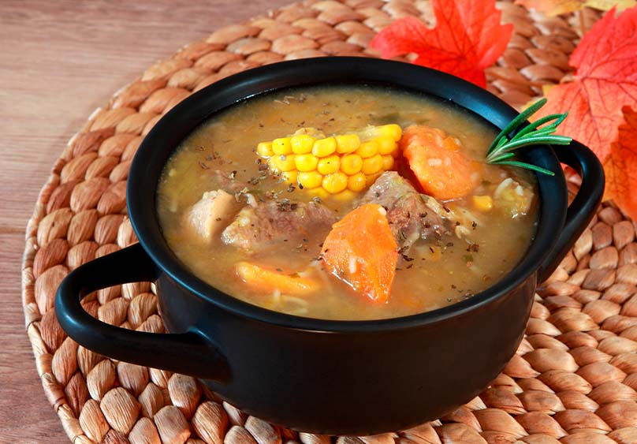
Su receta varía según la región. Es un caldo que se prepara con diferentes tipos de carne (vaca, pescado, pollo y cerdo). Estas proteínas se acompañan por plátanos verdes, papás, yuca y maíz. Una preparación deliciosa que es una de las favoritas de los colombianos.
Ver másEmpanadas
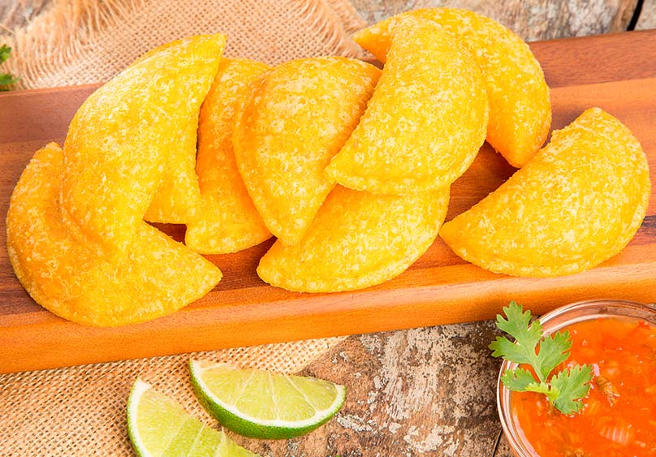
Son un pasabocas muy común y característico de Colombia. Pueden ser elaboradas con o sin carne. Contienen un guiso que mezcla cebollas, tomates maduros, ajo, especias y condimentos, aunque existen muchos tipos de rellenos.
Ver másComidas Tradicionales
Ajiaco
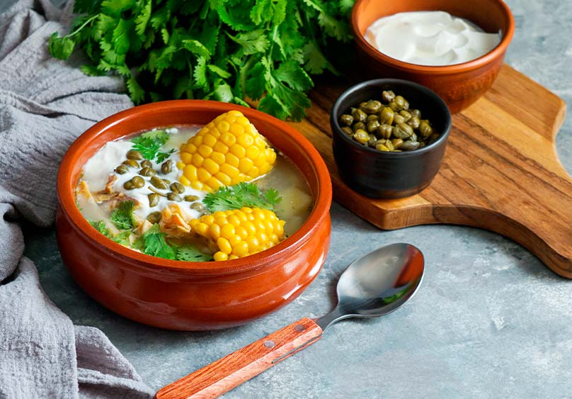
En la cocina colombiana, las sopas ocupan un lugar privilegiado. Esta preparación consta de 3 tipos de papás: criolla, pastusa y sabanera; y pollo en presas o desmenuzado, mazorca, guascas y opcionalmente alcaparras y crema de leche.
Ver másLechona
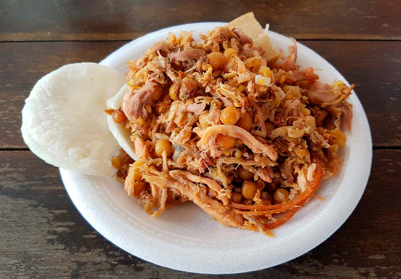
Es uno de los platos que más llaman la atención de los extranjeros, gracias a su curiosa presentación, que en algunos casos incluye la cabeza del animal. Se prepara rellenando el cerdo sin retirarle la piel con arvejas, arroz y especias.
Ver másMojarra Frita
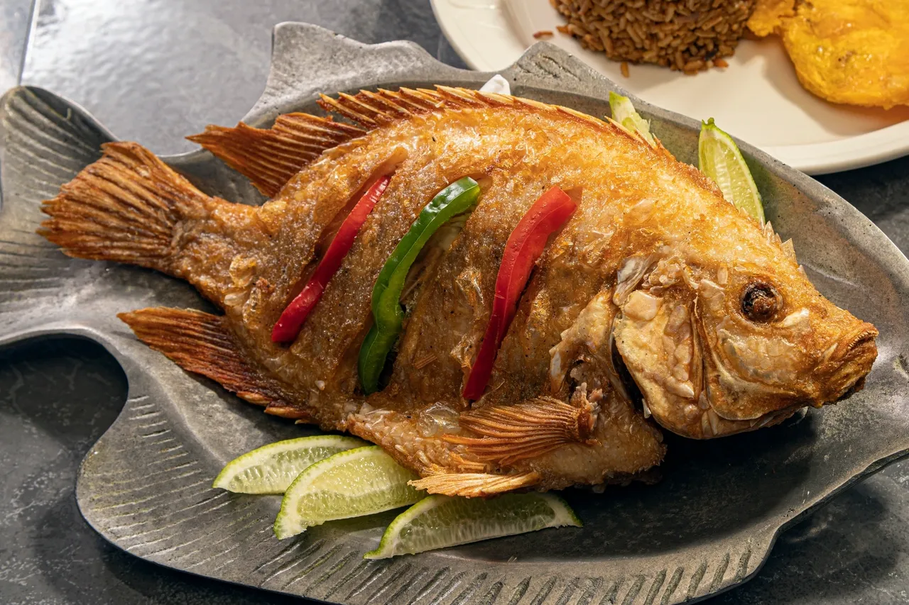
Esta mojarra entera frita, tan crujiente y con un buen chorrito de lima, recuerda Janeth Palacio Barrera de vacaciones en la playa de vuelta a casa.
Ver másMute
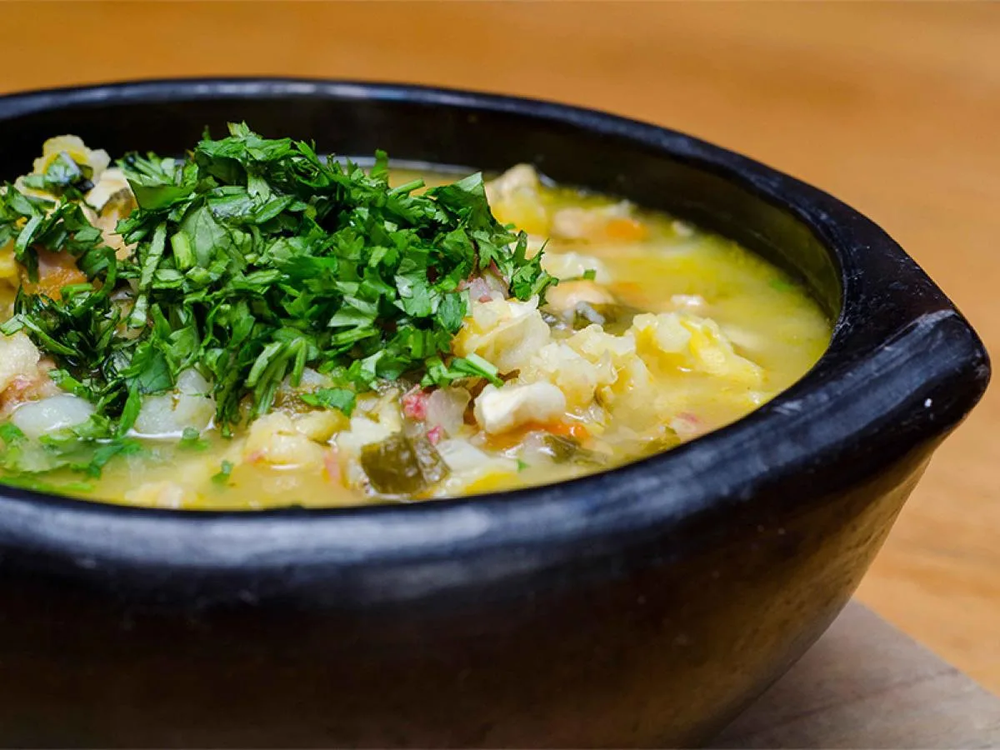
El mute santandereano es una deliciosa sopa cuya preparación es todo un ritual de comida lenta y un regalo al paladar más exigente.
Ver másManjares
Natilla
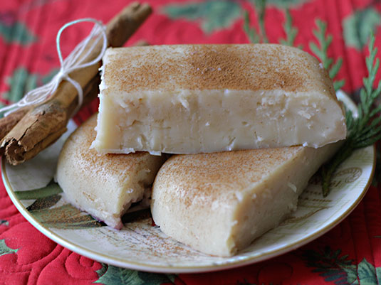
Es uno de los postres favoritos colombianos. La natilla colombiana tiene como ingredientes principales la harina de maíz, leche y panela y el huevo.
Ver másBuñuelos
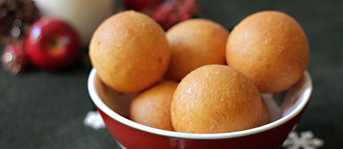
Se trata de unas frituras redondas elaboradas con queso fresco molido, huevos, almidón de maíz. Ideales para comer como entradas, deliciosos para ofrecer en tus reuniones navideñas.
Ver másManjar Blanco
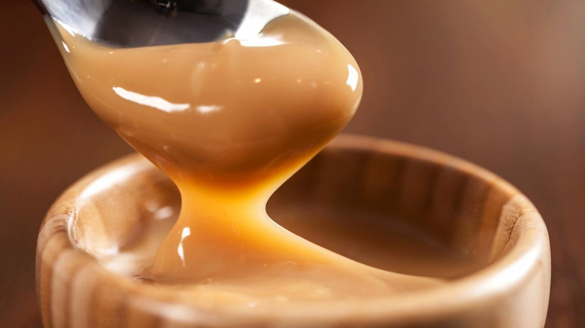
El manjar blanco, que casi siempre se prepara en el Valle del Cauca, es otra delicia que es súper deliciosa. Y esta es una de esas ocasiones en que todos nos reunimos para colaborar.
Ver másTamal
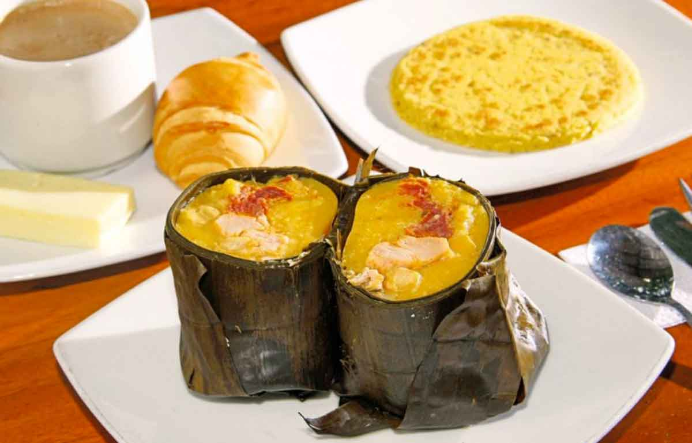
El tamal es una de las comidas más destacadas y tradicionales de la gastronomía colombiana, que como ingredientes principales tiene el maíz y el arroz, y las hojas de bijao o de mazorca con las que se envuelve.
Ver más